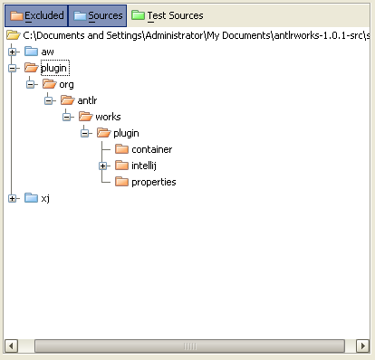
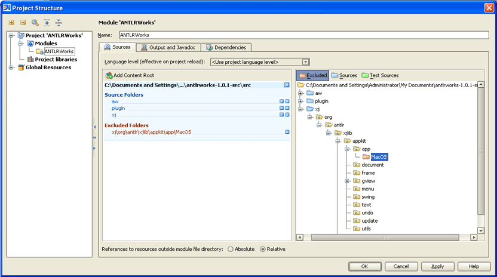
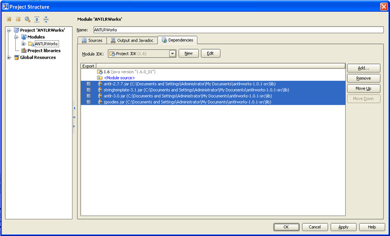
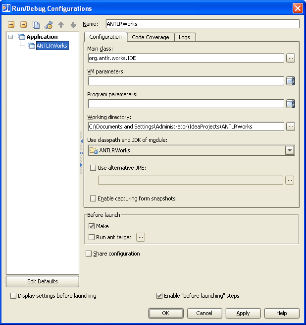

Introduction
This tutorial describes how to setup IntelliJ to edit, run and debug ANTLRWorks and its plugin for IntelliJ. This tutorial uses path example for Windows but the steps are exactly the same for Linux or Mac OS X.
What you need
- IntelliJ 5.x or 6.x: download it from www.jetbrains.com.
- If you want to edit the GUI form, JFormDesigner: download it from www.jformdesigner.com
- JDK 5.0 (it is possible to use JDK 6.0 if you are not planning to run the IntelliJ plugin version of ANTLRWorks)
Create the project in IntelliJ
- Open IntelliJ
- Create a new project using File > New Project:
- Choose a name for the project: for example "ANTLRWorks"
- Choose a location on the disk for the project. For example, C:\Documents and Settings\Administrator\IdeaProjects\ANTLRWorks
- Click Next
- Leave the output path with its default value
- Click Next
- Choose the appropriate JDK:
- If you want to compile and run the plugin for IntelliJ, use Java 1.5 (not higher because the IntelliJ JDK in IntelliJ 6 contains Java 1.5).
For example: C:\Program Files\Java\jdk1.5.0_11
- Otherwise, you can use Java 1.6. For example, C:\Program Files\Java\jdk1.6.0_01
- Click Next
- Select Create single-module project
- Click Next
- Select the Java Module type
- Click Next
- Leave the module name and content root as is
- Click Next
- Select Do not create source directory as we will add the source later on from the zip archive
- Click Finish
Add the source code of ANTLRWorks to the project
We will now add the source of ANTLRWorks to the project we just created in IntelliJ.
- Download the source code of ANTLRWorks from www.antlr.org/works
- Unzip the zip file to any location. For example: C:\Documents and Settings\Administrator\My Documents\antlrworks-1.0.1-src
- Go back to IntelliJ and open the project settings using File > Settings
- Choose Project Structure.
- Under Project "ANTLRWorks" > Modules > ANTLRWorks:
- Remove any content root already existing
- Click Add Content Root and choose the source of ANTLRWorks that you just unzipped
- Exclude the plugin source directory (we will create another module for the plugin later on)

- If you are not on Mac OS X, exclude the package org.antlr.xjlib.appkit.app.MacOS

- If you don't want to run the unit tests within ANTLRWorks (or don't have the junit.jar), exclude also the package org.antlr.works.test. Otherwise, don't exclude it but add the junit.jar under the Module Library (see below)
- Go in the Dependencies tab and click the Add button and choose Module Library: choose all the jar files under the lib directory of the unzipped source

- Finally, let's add which resource files the compiler needs to copy: select File > Settings > Compiler. Add the extension ?*.st to the Resource patterns field
Run ANTLRWorks from IntelliJ
- Choose Run > Edit Configurations
- Add an application with the following properties:
- Main class: org.antlr.works.IDE

- Use this configuration to run ANTLRWorks
Configure the ANTLRWorks plugin
In order to edit, run and debug the ANTLRWorks plugin for IntelliJ, we will need to create another module specifically designed for this task.
- Choose File > New Module
- Select Plugin Module
- Click Next
- Enter "Plugin" for the name of the module
- Add a project SDK: by default, the IntelliJ application will be selected which is what we want.
- Click Next
- Choose Do not create source directory
- Click Finish
Now let's add the necessary dependencies:
- Choose File > Settings > Project Structure.
- Remove any content root already existing.
- Add the source of the plugin as a content root. For example: C:\Documents and Settings\Administrator\My Documents\antlrworks-1.0.1-src\src\plugin
- In the Dependencies tab, add a Module Dependency and choose the module "ANTLRWorks" that we just created above.
- Set also the correct Plugin Deployment path. For example, C:\Documents and Settings\Administrator\My Documents\antlrworks-1.0.1-src\src\plugin\org\antlr\works\plugin\intellij\
Let's create the configuration that will enable us to launch the plugin in another instance of IntelliJ:
- Choose Run > Edit Configurations
- Add a new Plugin configuration
- Name it "Plugin"
- Add the following VM parameter: "-Xmx400m -Dorg.antlr.works.debug.plugin=true". The org.antlr.works.debug.plugin flag is used internally by ANTLRWorks to setup the necessary classpath to be able to run the debugger from within IntelliJ (this is not needed when the plugin is compiled and packed in a jar file for distribution).
- Use this configuration to run the plugin in another instance of IntelliJ. Once the other instance of IntelliJ is open, create a new project and then create a grammar file. Make sure to setup the javac path in the ANTLRWorks preferences (File > Settings > ANTLRWorks) to C:\Program Files\Java\jdk1.5.0_11\bin to avoid having issue launching the debugger from the plugin.